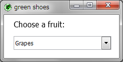

The Green Shoes Manual 1.0.331
ListBox
リストボックス（List box）（環境によって"コンボボックス（combo box）"または "ドロップダウンボックス（drop-down box）"または"セレクトボックス（select box）"とも 呼ばれています。）は箱をクリックしたときドロップダウンしてオプションが一覧として表示されます。 
リストボックスは配列からオプションを取得します。 配列（リスト）の文字列は、:itemsスタイルに渡されます。
Shoes.app do
para "Choose a fruit:"
list_box items: ["Grapes", "Pears", "Apricots"]
end
そして、リストボックスの基本のサイズは200ピクセルの幅と28ピクセルの高さです。 この長さはwidthスタイルを利用して調整することができます。
Shoes.app do
para "Choose a fruit:"
list_box items: ["Grapes", "Pears", "Apricots"],
width: 120, choose: "Apricots" do |list|
@fruit.text = list.text
end
@fruit = para "No fruit selected"
end
:widthスタイルに続いて、この例ではもう１つの便利なオプションを利用します。 :chooseオプションは始めからハイライトされるべきアイテムをリストボックスに教えます。 （箱が作成された後でアイテムをハイライトするにはchooseメソッドもあります。）
リストボックスはchangeイベントも持っています。次の例では、リストボックスに ブロックを取り付けました。いいですか、このchangeブロックを見てください。 このブロックは誰かが選択されたアイテムを変更するたびに呼ばれます。
これらは基本的なことです。すべての要素が持っているメソッドの完全な一覧である、 Commonメソッドのページを見てください。
誰かがリストボックスの新しいオプションをハイライトするたびに（例えば、アイテムをクリックする ことによって）changeブロックは呼ばれます。ブロックには変更されたリストボックスの オブジェクトであるselfが与えられます。
itemとして与えられた文字列と一致するリストボックス内のオプションを選択します。
リストボックスにフォーカスを移動します。そのリストはハイライトされ、ユーザが上や下の 矢印キーを押した場合、リスト内の別のオプションが選択されます。
リストボックスにオプションとして現在表示されている文字列の完全な一覧を返します。
リストボックスのオプションを新しい文字列の一覧で置き換えます。
現在リストボックス内でハイライトされて表示されているテキストを含む文字列です。 何も選択されていないなら、nilが応答されます。
Next: Progress